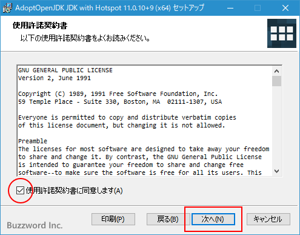

AdoptOpenJDKのダウンロード及びインストール
AdoptOpenJDK はコミュニティにより提供される OpenJDK のバイナリです。商用利用でも無償で利用可能です。ここでは AdoptOpenJDK のダウンロードおよびインストール方法について解説します。
AdoptOpenJDKについて
最初に AdoptOpenJDK を提供してくれるコミュニティについて簡単に見ておきます。「JDK 9以降のJDKの選び方と有償化について」で簡単に解説していますが、現在様々な会社や個人によって共同で開発された OpenJDK のソースコードを元に Oracle 社や他の会社がバイナリを提供してくれています。
Oracle 社は Oracle JDK と Oracle OpenJDK のバイナリを提供してくれていますが、 AdoptOpenJDK はコミュニティが提供する OpenJDK のバイナリです。
AdoptOpenJDK を提供してくれるコミュニティについては公式サイトで「Java User Group（JUG）のメンバー、Java開発者、Azul、Amazon、GoDaddy、IBM、jClarity（Microsoftが買収）、Microsoft、New Relic、Pivotal、Red Hatなどのベンダーのコミュニティです。」と説明がされています。
・About | AdoptOpenJDK - Open source, prebuilt OpenJDK binaries
AdoptOpenJDKのサポート期間
AdoptOpenJDK は Oracle JDK と同じく 3 年毎に提供されるバージョンで LTS(Long Term Support) 版となり、長期間のサポートを受けることができます。その他のバージョンは non-LTS 版となりサポート期間は半年間です。 2021年2月 現在、 AdoptOpenJDK の最新バージョンは 15 ですがこちらは non-LTS 版です。最新の LTS 版は 11 となります。
・Support | AdoptOpenJDK - Open source, prebuilt OpenJDK binaries
最新バージョンである AdoptOpenJDK 15 は non-TLS 版ですので 2020年9月 に登場し、サポート期間は 2021年3月 までです。最新の LTS 版である AdoptOpenJDK 11 は 2018年9月 に登場し、サポート期間は 2024年10月 までとなっています。
AdoptOpenJDKのダウンロード
AdoptOpenJDK のバイナリは次の URL から取得します。
・https://adoptopenjdk.net/index.html
※ 自動的にクライアントの OS が判定されて適切なプロダクトがダウンロードできるようになっていると思われますが、異なる OS 向けのバイナリをダウンロードする場合は画面下部に表示されている「Other platforms」をクリックすると Linux 、 Windows 、 macOS 、 Solaris 、 AIX から選択できます。最初の画面で表示されている以外のバージョンをダウンロードする場合も同じように「Other platforms」から選択できます。
ダウンロードする JDK のバージョンと JVM(Java仮装マシン) を選択します。 JVM は HotSpot と OpenJ9 から選択できます。 HotSpot と OpenJ9 の違いについては公式サイトによれば次のように説明されています。
HotSpot は OpenJDK コミュニティの JVM です。 現在最も広く使用されている JVM であり、 Oracle の JDK で使用されています。
Eclipse OpenJ9 は Eclipse コミュニティーの JVM です。低メモリ使用量と高速起動用に設計されたエンタープライズクラスの JVM であり、 IBM の JDK で使用されています。
判断できない場合、従来の JDK で使用されていたものと同じである HotSpot を選択しておけばいいかと思います。
今回はバージョンとして LTS 版である 11 を選択し、 JVM は HotSpot を選択しました。選択が終わりましたら「Latest release」をクリックしてください。
AdoptOpenJDK のダウンロードが開始されます。任意の場所に保存しておいてください。
AdoptOpenJDKのインストール
今回ダウンロードしたファイルは OpenJDK11U-jdk_x64_windows_hotspot_11.0.10_9.msi という名前となっています。 AdoptOpenJDK の場合、インストーラーが付いていますのでダウンロードしたファイルをダブルクックしてください。インストールが開始されます。
最初に次の画面が表示されます。「次へ」をクリックしてください。
「使用許諾契約書」が表示されます。よく読んでいただき、同意できる場合には「使用許諾契約書に同意します」にチェックをしてください。その後で「次へ」をクリックしてください。

「カスタムセットアップ」の画面が表示されます。
最初にインストール場所の設定です。デフォルトのインストール場所は「場所：」の右に表示されています。そのままでよろしければ変更する必要はありません。変更する場合は「参照」をクリックしてください。
場所を指定する画面が表示されますので、インストールしたい場所を選択してください。選択が終わったら「OK」をクリックしてください。インストール場所の変更が完了します。
その他の設定についてです。「Add to PATH」が有効になっていると(×が付いていないと)、必要なディレクトリが自動的に PATH に追加されます。「Associate .jar」が有効になっていると .jar 拡張子が付いたファイルをダブルクリックした時に AdoptOpenJDK の対応するアプリが起動します。「Set JAVA_HOME variable」が有効になっていると環境変数 JAVA_HOME に AdoptOpenJDK をインストールしたディレクトリが設定されます。「JavaSoft（Oracle）registry keys」については分かりませんでした。
今回はデフォルトで有効になっていなかった「Set JAVA_HOME variable」を有効にしてます。「×」の右に表示されている下矢印をクリックし、表示されたメニューのなかから「ローカルハードドライブにインストール」をクリックします。
カスタムセットアップの設定が終わりましたら「次へ」をクリックしてください。

最終確認です。インストールしてよければ「インストール」をクリックしてください。
次の画面が表示されれば AdoptOpenJDK のインストールは完了です。「完了」をクリックしてください。
それではインストーラーによって設定された PATH と JAVA_HOME にどのような値が設定されているか確認してみます。 PATH や JAVA_HOME の設定や値を確認する方法については「PATHの設定及び環境変数JAVA_HOMEの設定」を参照されてください。
PATH には次のように C:\pg\AdoptOpenJDK\jdk-11.0.10.9-hotspot\bin が設定されていました( AdoptOpenJDK をインストールしたディレクトリによって変わります)。
環境変数 JAVA_HOME を設定している場合は、 PATH に追加する値を %JAVA_HOME%\bin と書き換えてもいいです。
JAVA_HOME には次のように C:\pg\AdoptOpenJDK\jdk-11.0.10.9-hotspot\ が設定されていました( AdoptOpenJDK をインストールしたディレクトリによって変わります)。
-- --
AdoptOpenJDK のダウンロードおよびインストール方法について解説しました。
( Written by Tatsuo Ikura )

著者 / TATSUO IKURA
初心者～中級者の方を対象としたプログラミング方法や開発環境の構築の解説を行うサイトの運営を行っています。